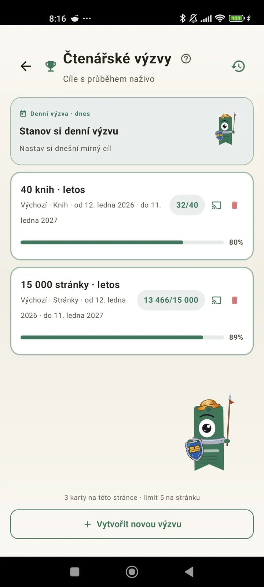

Poznej se jako čtenář
Výzvy, bingo, widgety a další funkce, abys ze čtení vytěžil maximum. Novinka ve verzi 3.7: widgety výzev a binga.

Čtenářské výzvy
Nastav si cíle podle stránek, sérií nebo žánrů. Až 15 aktivních výzev zdarma, s Pro neomezeně. K tomu denní výzva, kterou si upravíš a která se do limitu nepočítá.

Denní výzva
Každý den nový cíl. Splň výzvu před půlnocí a udrž si sérii.

Čtenářské bingo
Každý měsíc dvě nová binga s tematickými políčky. Doplň řádky, sloupce nebo celou kartu.

Týdenní souhrn
Každé pondělí přehled tvého týdne: přečtené stránky, celkový čas, série a srovnání s předchozím týdnem.

Měsíční shrnutí
Když měsíc skončí, Lecturameter ho shrne: stránky, čas, dočtené knihy, tvoje tempo den po dni a kniha měsíce.

Widget binga Pro
Bingo karta tohoto měsíce pořád na očích, se splněnými políčky a hotovými řadami.

Widget knihy Zdarma
Knihu, kterou čteš, vidíš přímo na domovské obrazovce: obálka, název, autor, stránky a procento průběhu, vždy aktuální. Velikost si upravíš, aby se vešel, kam chceš.
Vážně, kámo, ta aplikace je jako terapie. Z pár stránek denně jsem se dostal asi na 20 stránek denně a pořád se zlepšuju.Zpětná vazba od uživatele, poslaná e-mailem

Měsíční srovnání Pro
Rychlý pohled na poslední měsíce bez otevírání aplikace. Sloupce se stránkami za každý měsíc a zvýrazněný aktuální měsíc, takže hned vidíš, jestli ti to tento měsíc jde líp, nebo hůř než minule.

Widget výzev Pro
Tvoje aktivní výzvy a jejich průběh na domovské obrazovce. Které se mají zobrazit, vybereš na obrazovce Výzvy.